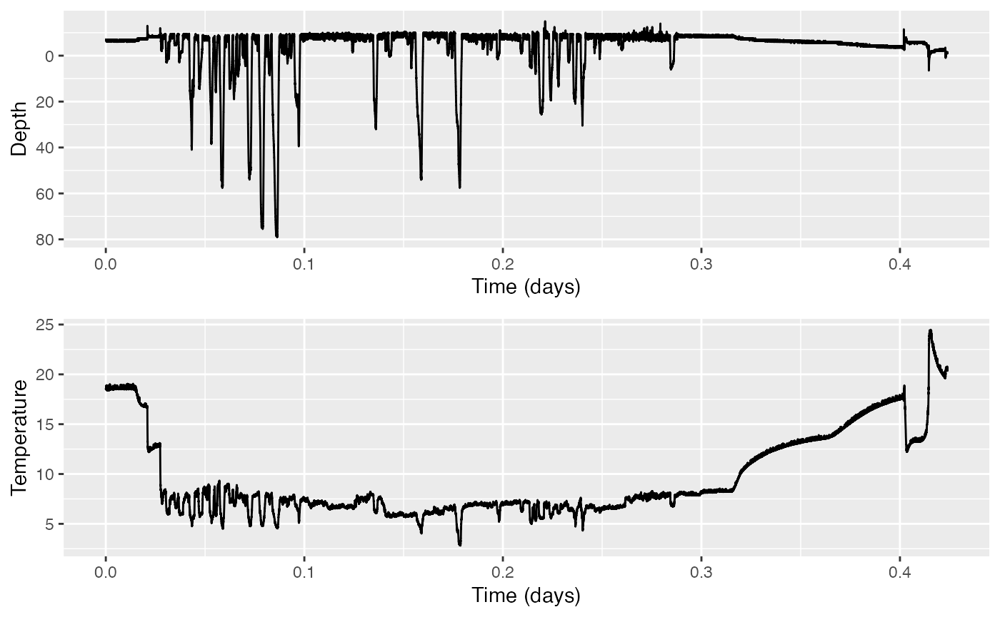
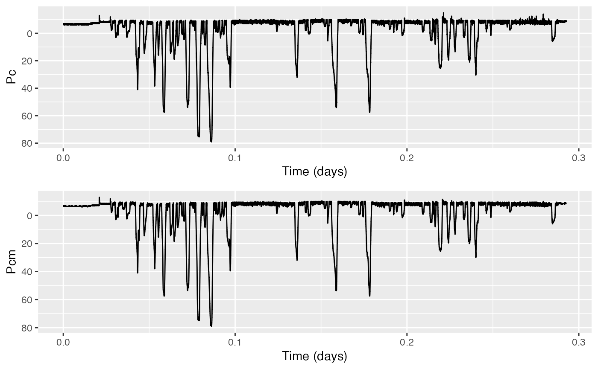
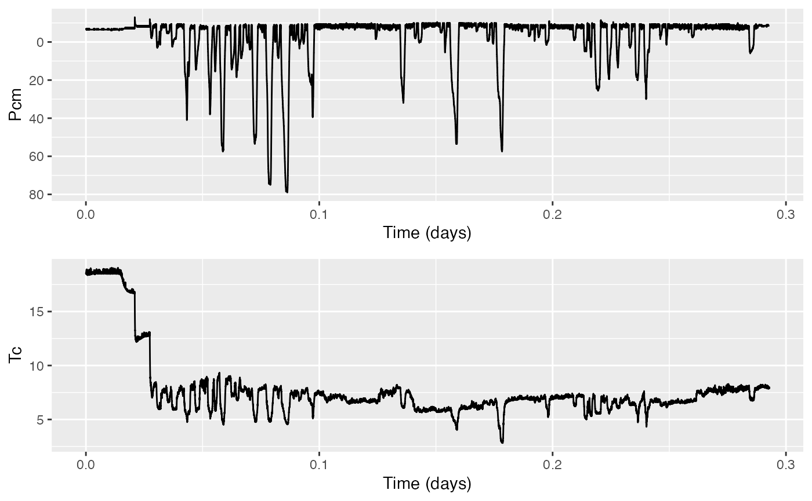
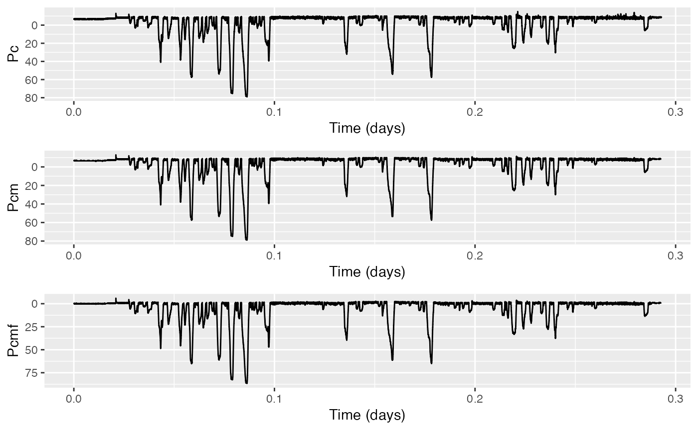

Using find_dives
tagtools project team
2023-07-10
Source:vignettes/articles/find-dives.Rmd
find-dives.RmdWelcome to this vignette! On behalf of the team behind tagtools, thanks for taking some time to get to know this package. We hope it is useful to you.
In this vignette you will learn to use find_dives to
gain insight about a depth profile, calculate the mean dive duration and
mean dive depth, and mark the beginnings and endings of dives.
Estimated time for this vignette: 20 minutes.
These practicals all assume that you have R/Rstudio, some basic experience working with them, and can execute provided code, making some user-specific changes along the way (e.g. to help R find a file you downloaded). We will provide you with quite a few lines. To boost your own learning, you would do well to try and write them before opening what we give, using this just to check your work.
Additionally, be careful when copy-pasting special characters such as
_underscores_ and ‘quotes’. If you get an error, one thing to check is
that you have just a single, simple underscore, and
'straight quotes', whether 'single' or
"double" (rather than “smart quotes”).
Load the test data set
Load the test dataset mn12_186a_raw.nc. This dataset has
already been converted from the source file that was offloaded from the
tag into a NetCDF file. In doing so, some metadata was gleaned from the
file and added to the data. Other metadata was added by hand. If you
want to run this example, download the “mn12_186a_raw.nc” file from https://github.com/animaltags/tagtools_data and change
the file path to match where you’ve saved the files
Use load_nc to load a NetCDF file:
This creates an animaltag list object MN in your workspace. You can view it in the Environment tab if working in RStudio, or in the command line type:
names(MN)
str(MN$A)
# not run because output is very long! see the whole STRucture of MN:
# str(MN)
# shorter outline version:
str(MN, max.level = 1)#> [1] "Results for `names(MN)`:"
#> [1] "------------------------"
#> [1] "P" "A" "M" "T" "S" "info"
#> [1] "Results for `str(MN$A)`:"
#> [1] "------------------------"
#> List of 19
#> $ data : num [1:1172115, 1:3] 2355 2340 2324 2315 2296 ...
#> $ sampling : chr "regular"
#> $ sampling_rate : num 32
#> $ sampling_rate_unit: chr "Hz"
#> $ depid : chr "mn12_186a"
#> $ creation_date : chr "07-Aug-2017 14:51:46"
#> $ history : chr "read_ll3m"
#> $ type : chr "acc"
#> $ full_name : chr "Acceleration"
#> $ description : chr "triaxial acceleration"
#> $ unit : chr "1"
#> $ unit_name : chr "counts"
#> $ unit_label : chr "counts"
#> $ start_offset : num 0
#> $ start_offset_units: chr "second"
#> $ column_name : chr "x,y,z"
#> $ frame : chr "tag"
#> $ axes : chr "FRU"
#> $ files : chr "20120704-57537-Mn-XXXX-U-NoName-Acceleration-X.TXT20120704-57537-Mn-XXXX-U-NoName-Acceleration-Y.TXT20120704-57"| __truncated__
#> [1] "Results for `str(MN$A)`:"
#> [1] "------------------------"
#> List of 6
#> $ P :List of 17
#> $ A :List of 19
#> $ M :List of 19
#> $ T :List of 16
#> $ S :List of 17
#> $ info:List of 25
#> - attr(*, "class")= chr [1:2] "animaltag" "list"You should see that lists A, M,
P, S, T and info are
contained within the list MN.
Exercise: Calculate the mean duration of dives deeper than 5m
Our goal with these data is to calculate the mean duration of dives deeper than 5 m. If you can think of a way to do this already, please go ahead and try! You can then compare your answer to the step-by-step procedure below.
As with all raw depth data, there are some problems with this dive profile. Try and plot the depth profile and the temperature. Then, see if you can find evidence for each of these in the plot:
- Incorrect calibration of the sensor
- Occasional outliers
- Coarse depth resolution
- Temperature sensitivity
1. Pay attention to the depths reported… While it looks like a dive profile, mostly, what looks like the “surface” is actually around some \(-10\) m (that is, ten meters high in the air)! We know that humpback whales do not, in fact, go ten meters in the sky routinely. This suggests the sensor has not been well-calibrated. 2. Occasionally, there are some peaks that go higher yet than these ten meters high in the sky momentarily (more like 15 meters). These are outliers. 3. Zoom in to the shallow part of the dive to notice this. The individual measurements are only precise to the meter; thus it will appear to jump back and forth more suddenly than we would expect for a relaxed whale at the surface. 4. The temperature gradually rises as the recording nears the end, then spikes down and up. This is accompanied by a gradually decreasing depth from ten meters in the sky to the surface. Together, the two trends strongly suggest that the depth data has been affected by the changing temperature as the tag sits near the surface.
Hints & Tips
- Look in
infoto find what species the data come from. Are the depth values reasonable for this species? - Zoom in and see what size depth steps there are in the data.
- Use
plottto plot both the depth and temperature:
plott(X=list(Depth=MN$P, Temperature=MN$T), r=c(TRUE,FALSE))
# r=c(TRUE,FALSE) tells plot to reverse the y-axis for the Depth data (so that it looks like a dive profile), but not for the Temperature data (which would be silly). 
What to do about periods of data when the tag is not on the animal
Not all tags have a way to start logging as soon as the tag has been deployed on the animal. Often data logging is started by a time trigger or alarm, and the researcher has to make a guess as to when the tag will be deployed to set its start time appropriately. Often this means that a tag is logging data before it is put on an animal.
Equally, tags have no means of detecting when they release from the
tagged animal. As a consequence, they may continue to log data after
they release. In most cases, the logged data from before and after
deployment has no use. To reduce the data to just the periods when the
tag is on the animal, use the tool crop:
Pc = crop(MN$P)

#> [1] "Position your cursor and then click once followed by clicking FINISH to change the start, or click twice in the same spot followed by clicking FINISH to change the end. If you wish to change both the start and end click once at the start time desired and twice at the end time desired."This displays an interactive depth plot. Follow the instructions to select the obvious diving section of the data and then click finish. The function returns a new data structure which contains just the selected part of the dive profile. The resulting sensor data list also contains fields that document what you just did. To see them:
Pc$history
str(Pc, max.level = 1)#> [1] "Results for `Pc$history`:"
#> [1] "-------------------------------------"
#> [1] "read_ll3m,crop_to"
#> [1] "Results for `str(Pc, max.level = 1)`:"
#> [1] "-------------------------------------"
#> List of 21
#> $ data : num [1:25306] -6.5 -6.5 -6.5 -6.5 -6.5 -6.5 -6.5 -6.5 -6.5 -7 ...
#> $ sampling : chr "regular"
#> $ sampling_rate : num 1
#> $ sampling_rate_unit: chr "Hz"
#> $ depid : chr "mn12_186a"
#> $ creation_date : chr "07-Aug-2017 14:51:49"
#> $ history : chr "read_ll3m,crop_to"
#> $ type : chr "press"
#> $ full_name : chr "Pressure"
#> $ description : chr "dive depth"
#> $ unit : chr "m H2O"
#> $ unit_name : chr "meters H2O (salt)"
#> $ unit_label : chr "meters"
#> $ start_offset : num 0
#> $ start_offset_units: chr "second"
#> $ axes : chr "D"
#> $ files : chr "20120704-57537-Mn-XXXX-U-NoName-Depth.TXT"
#> $ crop : num [1:2] 0 25306
#> $ crop_units : chr "seconds"
#> $ start_time : num 0
#> $ start_time_units : chr "seconds"The $history field keeps track of the operations that
you perform on a data structure. This helps with traceability if you
make the processed data available in an archive. The $crop
and $start_time fields show how the original data was
changed: the start_time is with respect to the field
‘dephist_device_datetime_start’ in the $info structure
which says when the tag recording started. Use plott to
plot Pc to make sure you cropped it correctly.
Note that the results from here on out will look a little different depending on where exactly you’ve cropped your data, but it should come to essentially the same thing.
Removing outliers.
Outliers or spikes in the data may result from errors in the tag or poor sensor performance under rapidly changing environmental conditions. For example in this data set, rapid changes in temperature and pressure as the animal surfaces cause small glitches in the data. These are not representative of the animal’s behaviour so we need to remove them. A good way to do this is with a median filter. Type:
?median_filterto find out how this function works. You call it using:
Pcm = median_filter(Pc,n=3)Your variable Pcm now contains the median-filtered,
cropped depth data. Check its history to verify that the median
filtering has been added. Compare it against the unfiltered data
using:

This plots Pc in the upper panel and Pcm in
the lower one, and reverses the y-axis labeling on both plots (by
setting r to TRUE both times).
Correcting pressure offsets & temperature effects
The next step is to correct the ‘0’ pressure offset of the depth sensor (so that the animal is not 10 m out of the water when it is really at the surface). We can also compensate for temperature at the same time. To do this we have to first crop the temperature data to match the pressure data. You can do this using:
Tc <- crop_to(MN$T,tcues=Pc$crop)This uses the crop information stored in Pc to do the same operation on T. Plot them together to confirm that the time intervals (horizontal ticks) are the same:

The tag toolbox has a function to correct pressure data called ‘fix_pressure’. Type
? fix_pressureto find out what it does and what assumptions it makes about the data. Use this function by calling:
Pcmf <- fix_pressure(Pcm, Tc)Compare the compensated dive profile to the uncompensated cropped ones using plott. (The code below will produce three plots, which might make them a bit small. Hit “Zoom” to view them in a larger window.)

Which of the problems that we listed above have been taken care of? Any ideas what you could do about the remaining one(s)?
1. Incorrect calibration of the sensor and temperature sensitivity have both been addressed by now, since the whale is actually resting and breathing at the surface, rather than ten meters in the air. Additionally, some of the occasional outliers have been removed by the median filter.
However, none of this has increased the resolution of the depth data. In order to resolve this last issue, ultimately, new data would have to be taken at higher resolution.
Finding dives & the mean dive duration
To find the mean dive duration for dives over 5 m in depth, you could
measure each dive by hand on the depth plot
(ginput is a useful function in Matlab and Octave for
measuring data on a plot – there isn’t a great equivalent in R, where
interactive plots are not really commonly used). But there is a toolbox
function for this called find_dives. See the help on this
function to find out what it does and what options it has.
? find_divesTo find dives deeper than 5 m in your compensated dive data, type:
d <- find_dives(Pcmf$p,mindepth=5)
str(d, max.level = 1)#> 'data.frame': 50 obs. of 4 variables:
#> $ start: num 2392 2604 3165 3626 4023 ...
#> $ end : num 2481 2778 3361 3860 4213 ...
#> $ max : num 5.75 10.74 10.24 48.7 22.23 ...
#> $ tmax : num 2432 2640 3196 3739 4073 ...d should return a data frame with the start, end, and
maximum depth of about 51 dives (depending on where you cropped the
data). How can you get the mean dive duration & mean (maximum) dive
depth from this structure? Code below provides one possible answer.
total_dive_duration <- matrix(0)
for(n in 1:nrow(d)) {
total_dive_duration <- total_dive_duration + d[n,2] - d[n,1]
}
mean_dive_duration <- total_dive_duration/nrow(d)
mean_dive_duration
# since this is using data from find_dives, the mean duration is in seconds
# and mean depth
total_dive_depth <- matrix(0)
for(n in 1:nrow(d)) {
total_dive_depth <- total_dive_depth + d[n,3]
}
mean_dive_depth <- total_dive_depth/nrow(d)
mean_dive_depthWhen you have got the mean dive depth, try plotting the start and end of the dives on the depth plot:
plott(X=list(Pcmf=Pcmf$p), r=TRUE)
points(d$start/(3600*24),rep(0,nrow(d)),col='green', pch=19)
points(d$end/(3600*24),rep(0,nrow(d)),col='red', pch=17)Again, this plot might be rather small. As a result it might be tricky to make sense of the markers that designate the starts and ends of dives. You should be able to click Zoom to view the plot in a larger window.
Note: if you cropped the time such that the units of the x-axis are
not in days, you will have to adjust the multipliers in the
points code accordingly. In the example above, the start
and end times returned by find_dives are in seconds so we needed to
divide them by 3600*24 to match the unit (days) automatically selected
for time by plott.
Review
Great work! You’ve learned how to use find_dives.
If you’d like to continue working through these practicals,
dive-stats might be a good option if you’re especially
interested in analyzing individual dives. Otherwise, consider
fine-scale-tracking or
mahalanobis-distance.
Animaltags home pages: http://animaltags.org/ (old), https://animaltags.netlify.app/ (new), https://github.com/stacyderuiter/TagTools (for source code)